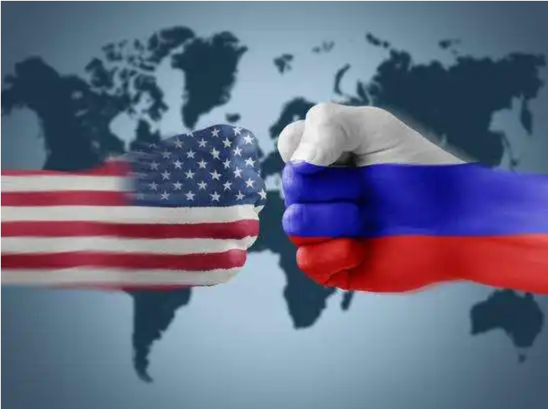
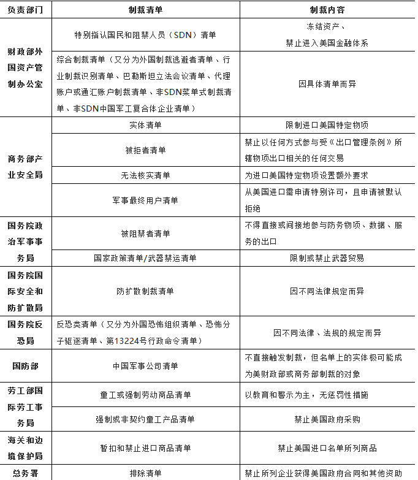

收录于合集

美国制裁改革背景下的对俄经济制裁
作者： 刘建伟，中央财经大学财经研究院/国防经济与管理研究院副研究员（北京 邮编：102206）。

摘要
美国自冷战结束以来特别是在特朗普执政时期，对外频繁实施经济制裁，受到广泛批评。拜登执政后开始推动制裁改革，强调要为经济制裁设定清晰目标、加强同盟友和伙伴国的协调、减少制裁的非故意后果、提高制裁的灵活性和易执行度，并增强政府内制裁团队力量。在俄罗斯对乌克兰发起特别军事行动后，美国联合盟友对俄罗斯发起规模空前的经济制裁，这为观察拜登政府的制裁改革提供了重要契机。研究发现， 美国对俄制裁的目标杂乱且是危险的，对制裁与其他对外政策工具的统筹运用明显不足 ，强调用制裁惩罚俄罗斯但忽视了制裁的谈判议价功能，并且低估了制裁的系统性影响。可见，美国对俄制裁背离了拜登政府制裁改革的初衷和原则。如果这属于无意背离，说明拜登政府对制裁改革并不严肃；如果属于有意背离，则意味着美国为对俄制裁设定了非常宏大的战略目标，意在重塑区域乃至全球政治经济秩序。
自俄罗斯对乌克兰发起特别军事行动以来，美国联合其主要盟友迅速、全面制裁俄罗斯，制裁范围之广、力度之大、升级之快、影响之远为二战后至今所少见。值得注意的是，俄罗斯并非第一次受到美国制裁，也不是唯一受到美国如此严格制裁的国家。但是，与此前的制裁相比，此次制裁具有一个特殊的背景，即拜登政府的制裁改革。由于美国频繁发起经济制裁并因此受到国内外的广泛批评，拜登政府执政之后开始评估美国的经济制裁政策，积极推动制裁改革，并对不少经济制裁项目进行调整。把此次对俄罗斯的制裁放到美国制裁改革进程中进行探讨， 一方面，有助于更准确地理解美国对俄制裁的真正目的和走向；另一方面，有助于预判美国经济制裁政策的未来调整方向。
01
**后冷战时期的美国经济制裁
**
非对称相互依赖是经济制裁的主要理论基础。如果一国在与别国的相互依赖关系中更具韧性，那么该国就具备了发起经济制裁的基本条件 。从这个角度讲，经济制裁是强国的特权。正因如此，尽管美国实施经济制裁的历史可追溯到其建国之初，但直到二战结束并获得经济霸权之后，它才成为经济制裁的主要玩家。冷战时期，美国不但对苏联、中国等社会主义国家实施战略禁运，还对伊朗、南非、利比亚等不结盟国家乃至其盟国英国、法国发起过经济制裁。[1]从总体上看，冷战时期的美国经济制裁以主权国家为主要对象、以贸易管制为主要手段。
冷战结束后，美国陆续对伊拉克、南斯拉夫等国发起全面经济制裁，但效果不甚理想，且造成大规模人道主义灾难，遭到国内外广泛批评。在此背景下，美国开始调整经济制裁政策，从全面经济制裁转向定向制裁（targeted sanctions）或所谓“聪明制裁”（smart sanctions），即精准选择制裁对象和措施，惩罚“肇事者”但避免伤及无辜民众。“9·11”恐怖袭击事件发生之后，美国加速经济制裁改革进程，一方面加强了针对恐怖主义、毒品犯罪、大规模杀伤性武器扩散等问题的主题型制裁，另一方面大幅提升财政部在国家安全中的角色，把金融制裁当作最重要的经济制裁措施。[2]此后，随着伊朗核问题的升级，特别是大国战略竞争时代的到来，美国不断完善经济制裁制度体系，大幅充实经济制裁“弹药箱”，频繁发起对外制裁，俨然转化为一个“制裁合众国”。[3]
第一，经济制裁工具“推陈出新”。美国经济制裁存在侠义和广义之分。侠义的制裁主要是指美国财政部外国资产管制办公室（Office of Foreign Assets Control, OFAC）管理的金融制裁，以及除武器禁运和出口管制之外的贸易制裁。[4]广义的制裁泛指美国为实现国家安全和对外政策目的而对其与别国经济往来施加的所有限制性措施。冷战结束后，面对新的安全威胁以及科技和经济新的发展形势，美国不断更新、细化经济制裁工具，逐步打造出一个以金融制裁和出口管制为主，包括武器禁运、提高关税、限制政府采购、外资审查、停止项目合作、关闭港口领空等在内的庞大制裁工具体系。美国近年对伊朗、俄罗斯和中国发起的经济限制已经远远超出金融制裁和贸易制裁范畴。对此，学界开始使用“经济胁迫”（economic coercion）或“胁迫性经济工具”来取代“制裁”一词，白宫也将2022年2月24日以来的对俄制裁称为“限制性经济措施”。[5]
第二，经济制裁制度体系日趋复杂。美国强调依法制裁，在冷战后修订或新出台数十部法律，先后制定二十多个清单，建立了一个十分庞大且复杂的经济制裁制度体系。美国经济制裁法律大致分为三类，一是基础类法律，主要包括《国家紧急状态法》（National Emergencies Act）和《国际紧急经济权力法》（International Emergency Economic Powers Act），授予总统发起经济和金融制裁广泛且基础性的权力；二是议题类法律，包括针对人权和腐败问题的《全球马格尼茨基人权问责法》（Global Magnitsky Human Rights Accountability Act），针对恐怖主义的《反恐怖主义和有效死刑法》（Antiterrorism and Effective Death Penalty Act），针对毒品交易的《外国毒枭指认法》（Foreign Narcotics Kingpin Designation Act）以及针对武器扩散的《武器出口控制法》（Arms Export Control Act）和《出口管理法》（Export Administration Act）等；三是国别类法律，如专门针对伊朗的《全面制裁伊朗、问责和撤资法》（Comprehensive Iran Sanctions, Accountability, and Divestment Act）、《伊朗自由和反扩散法》（Iran Freedom and Counter-Proliferation Act）、《伊朗制裁法》（Iran Sanctions Act）等。第一类法律属于授权型法律，在20世纪70年代中后期出台，在很大程度上体现了美国立法机构对行政机构发起经济制裁的监督和制约。后两类法律大多数颁布于冷战之后，它们不仅是对总统发起制裁的授权，而且是对行政机构实施制裁的敦促和要求。这从一个侧面反映了美国国会越来越多地参与到经济制裁之中，成为推动美国经济制裁的重要力量。
除法律之外，制裁清单或黑名单是美国经济制裁制度体系的另一大支柱和特色。到目前为止，美国已经建立了至少涉及7个行政部门的20多个制裁清单（见表1）。在这些名目繁多的制裁清单中，特别指认国民和阻禁人员清单（Specially Designated Nationals and Blocked Persons, 简称SDN清单）、实体清单（entity list）最为重要。SDN清单设立于1986年，由财政部外国资产管制办公室负责管理，是美国对外经济制裁的最主要抓手。被列入清单者将受到两类制裁，一是资产被冻结，二是无法与美国公民、企业和实体开展交易。由于美国在全球金融体系中占据主导地位，并且对“与美国开展交易”的规定非常宽泛，被列入清单就意味着无法进入美国市场和全球金融体系。[6]截至2021年10月，该清单共有9421个实体或个人。
表1 美国经济制裁清单

来源：作者自制
实体清单开始于1997年，由美国商务部产业安全局（Bureau ofIndustry and Security, BIS）管理，最初目的是加强对大规模杀伤性武器的出口管制，后来被用于应对涉及美国国家安全和对外政策的广泛议题。一旦被列入实体清单，外国机构或企业进口原产于美国或包含美国技术的特定物项将变得非常困难。美国出口商在向实体清单所列机构或企业出口受美国《出口管理条例》所辖物项之前，除了需要获得一般出口许可之外，还必须申请额外的许可，而这种额外的许可申请通常会被拒绝。[7]截至2021年8月19日，该清单中涉及的实体共有1519个。
第三，经济制裁数量、频次直线上升。本文根据下面四个标准统计了美国在1994—2020年之间发起的经济制裁。一是以总统颁布行政命令为发起制裁的标志；二是把美国针对不同国家发起的制裁作为不同的制裁案例，把出于不同原因针对同一国家发起的制裁也作为不同的制裁案例，但把出于同样原因对同一国家多次发起的制裁作为同一个制裁案例；三是仅统计美国在联合国安理会框架之外发起的制裁；四是由于资料可获性问题，所统计制裁措施不包含出口管制。
据初步统计，1994—2020年，美国共发起34项国别制裁（以主权国家为制裁对象）、8项议题型制裁，共计42项。其中，美国在1994—2002年、2003—2011年、2012—2020年分别发起13、14、15项制裁。美国最常以意识形态为由发起制裁，在34项国别制裁中，有29项涉及促进民主或保护人权。冻结资产则是美国最常使用的制裁手段。在34项国别制裁中有27项包括冻结资产措施，8项议题型制裁则全部涉及冻结资产措施。
由于统计标准所限，上述数据未能充分显示美国制裁数量、频次的变化，观察美国制裁清单则有助于弥补这一缺陷。以美国财政部外国资产管制办公室制裁清单例，它在2000年只列出912个实体或个人，但这一数字在2021年就猛增到9421个。在奥巴马第二任期，美国财政部把2350个实体或个人列入制裁清单。特朗普执政四年，则有3850个实体或个人被美国财政部列为制裁对象，清单规模扩大了64%。由此可见，美国在冷战结束后越来越频繁地发起经济制裁，正如美国财政部所提到的，“经济和金融制裁已经成为美国应对国家安全、对外政策和国民经济威胁的首选之策。”[8]
02
拜登政府推动经济制裁改革
在过去20年尤其是特朗普任期内，经济制裁在美国国家安全和对外政策中的角色显著增强，美国不断推出新的胁迫性经济工具，不断扩大经济制裁制度体系，频繁对外挥舞经济制裁大棒。美国通过经济制裁解决了不少棘手难题，但对制裁的运用和管理也面临一系列困难和挑战，这迫使拜登政府重新审视并改革美国的经济制裁策略、政策和项目。
（一）拜登政府经济制裁改革的动因
第一，担忧经济制裁不可持续并会损害美国的中长期利益。经济制裁常被称为双刃剑，可能“伤敌一千、自损八百”。限制进口会推升发起国国内物价，损害消费者利益，出口管制会影响发起国相关产品所占国际市场的份额，甚至人为制造出强有力的国际竞争者。充当国际货币的美元、作为全球金融中枢的美国金融市场是美国金融制裁乃至经济制裁的最重要依托，但是美元和美国金融市场的主导地位因频繁的金融制裁也受到影响。[9]面对美国的金融制裁及制裁威胁，伊朗、俄罗斯等国家已经开启去美元化进程，逐步增加了国际储备中的非美元币种，积极推动使用本币进行双边贸易结算，甚至尝试建立绕过环球同业银行金融电讯协会（以下简称SWIFT）的国际支付系统。[10]这种趋势引起美国政治和经济精英的强烈担忧。在奥巴马政府担任财长的雅各布·卢（Jacob Lew）曾发出警告，“如果华盛顿继续强迫其他国家遵守它们认为不合法、不明智的（制裁）政策，这些国家有可能在未来20年到30年间逐渐退出美国经济和金融体系。”[11]特朗普政府时期的财长姆努钦（Steven Mnuchin）存在同样的顾虑并指出，“我当然认为我们必须运用制裁来应对重要的国家安全利益威胁，但也需要思考它对全球货币的长期影响。”[12]
第二，对经济制裁有效性的质疑。学界对经济制裁的有效性长期存在争论。一般认为，除了少数个案如对伊朗制裁促成“联合全面行动计划”（又称“伊朗核协议”）之外，美国大多数制裁项目未能取得成功。美国政府官员通常用对象国遭受的损失来佐证制裁的有效性。然而，制裁产生影响不等于有效，前者可用对象国的损失来衡量，评估后者则必须依据对象国政策的变化，特别是这种变化是否符合发起国的利益。美国政府问责署（Government Accountability Office, GAO）专门调查指出，美国主管经济制裁事务的三大部门财政部、商务部和国务院均密切关注制裁的影响，但没有一个部门系统评估制裁的效果，即制裁是否达到美国的政策目标。[13]美国政府一方面日趋频繁地发起经济制裁，另一方面却不知制裁效果如何，这对宣称要与特朗普政府拉开距离的拜登政府提出了改革要求。
第三，特朗普政府发起的经济制裁对美国对外政策和政府形象带来巨大负面影响。特朗普政府强调“美国优先”，发起经济制裁时不惜牺牲盟友利益。2018年，特朗普政府不顾多国反对，单方面退出伊朗核协议，重新施加并扩大对伊制裁。由于制裁包含次级制裁内容，欧盟经济利益受到损害，先后启动阻却条款、推出“支持贸易交换工具”（Instrument inSupport of Trade Exchanges, INSTEX）以回应美国的制裁。[14]2019年，特朗普政府又对欧俄“北溪2号”天然气管道项目实施制裁，进一步激化了美欧矛盾，扩大了跨大西洋关系的裂痕。同时，高频度制裁和大力度执法还带来大量人道主义问题。美国政府在出台制裁豁免方面行动缓慢、滞后，如在新冠肺炎疫情暴发近一年半后才颁发通用许可允许开展与防疫相关的市场交易。而且，由于美国对违反制裁者的惩罚力度非常大，外国金融机构过度遵守美国制裁的现象普遍存在，这就导致即便得到许可的人道主义援助也很难送至被制裁国。有调查报告指出，美国国际开发署的所有9家合作方均遇到在获准向委内瑞拉提供人道主义援助的条件下仍无法找到银行为其开展交易的困境。[15]制裁给被制裁国带来大量人道主义问题，这让自诩为“人权卫士”的美国饱受指责。
第四，面临人力、知识和技术等压力。随着美国制裁项目越来越多，制裁名单规模越来越大，制裁法律体系越来越庞杂，以及由科技和金融创新催生的规避制裁新方式的出现，美国在管理和执行制裁项目方面还面临快速上升的人力、知识和技术压力。由于拥有丰富的实践经验和人脉资源，负责制裁项目的美国官员往往成为相关企业、银行和智库大力争取的对象，这种人才争夺进一步加剧了美国在制裁方面人力资源的紧张。[16]专业技术和人力资源短缺同样构成拜登政府改革经济制裁政策的一大原因。
（二）拜登政府经济制裁改革及其反响
早在2020年大选期间，拜登就多次批评美国的经济制裁政策，声称当选之后要启动经济制裁改革。拜登执政后，美国政府正式开始评估和调整其经济制裁政策。从目前来看，拜登政府的经济制裁改革尽管已取得不少进展，但仍处于进行时，尚未完成。同时，当前的改革主要针对财政部负责的金融制裁，尚未推进到其他部门主管的制裁项目，更没有升级到立法改革的程度。
2021年10月，美国发布《2021年财政部制裁评估报告》，总结了美国经济制裁存在的问题、面临的挑战，为推动后续制裁改革设定了基本原则和施政框架。根据该报告，美国将根据五个原则改革和实施经济制裁：一是为制裁设定清晰的政策目标和结构化的政策框架，二是尽可能加强国际协作，三是尽量减少制裁带来的各方面非故意后果，四是确保制裁易理解、可执行、能调整，五是增加投入以改善财政部制裁技术、人力和基础设施状况。[17]值得注意的是，该报告是对美国经济制裁策略或方向的宏观评估，并没有逐个评价现有的具体制裁项目及制裁名单。
拜登政府经济制裁改革灵活性高，边评估、边调整、边实践。在财政部发布评估报告之前，拜登政府已经根据该报告的原则调整过具体制裁项目。例如，2021年5月，美国国务院和财政部先后发布豁免令，停止对参与“北溪2号”项目的企业和个人实施制裁，以免激化美德关系；在从阿富汗全面撤军之后，美国财政部外国资产管制办公室于2021年9月24日发布两项通用许可，以避免对塔利班的制裁影响阿富汗平民。在财政部发布评估报告后，美国加速调整现有制裁项目，其中最具代表性的一项措施是在2021年12月一次性把274个与哥伦比亚革命武装（FARC）有关的个人和实体从SDN清单中移除，以此践行评估报告规定的应确保制裁“能调整”的原则。[18]
总体而言，拜登政府经济制裁改革是对特朗普政府经济制裁政策的拨乱反正，其改革方向得到美国盟友、人权组织、国际问题和制裁问题专家的肯定，但其进展缓慢，因此仍然受到不少批评。这些批评包括如下几个方面，一是拜登政府经济制裁改革的范围和深度有限，仅仅局限于财政部的金融制裁，并且尚未提升到修法立制的程度；二是当前对制裁的评估仅仅停留在抽象原则层面，没有系统、逐个地审视现有的数十个制裁项目；三是当前的制裁改革忽视了一个重要问题，即制裁产生效果的一大前提是必须明确设定制裁升级、降级和解除的条件，而美国仅把制裁当作一种谈判议价工具；四是当前改革没有足够重视经济制裁和其他对外政策工具的统筹运用问题；五是尚未采取实质性的有力措施来缓解制裁的“寒蝉效应”或金融机构的过度遵守问题，以及保证被制裁人员和实体指认流程的公正性。[19]基于此，预计拜登政府将继续推进经济制裁改革，重点在争取国际合作、保护人权等方面发力。不过，面对政治极化的国内环境和俄乌冲突的强烈冲击，拜登政府未来经济制裁改革的深度和广度将非常有限。
03
美国对俄制裁的“新瓶”与“陈酒”
从2022年2月22日俄罗斯宣布承认乌克兰东部两地独立开始，美国先后对俄发起多轮经济制裁。从被制裁国经济体量和国际影响角度看，此次制裁超过二战结束以来的绝大多数制裁案例，只有二战时期国际社会对意大利的制裁可与其比肩。对照制裁研究学界的长期呼吁以及拜登政府经济制裁改革的基本原则来看，美国此次对俄制裁既有新内容又有旧思维，但旧思维明显胜过新内容。
（一）美国对俄罗斯发起极限制裁
当前，美国对俄制裁包括四个方面。[20] 第一，针对选定人员实施冻结资产、禁止入境两项制裁措施。美国主要制裁三类人员 。一是普京等俄罗斯主要领导人，美国认为这些人员是俄乌冲突的首要责任人，自然应首先受到惩罚。2022年2月25日，白宫宣布制裁俄总统普京和外长拉夫罗夫，开创了将大国最高领导人列为制裁对象的先例。二是包括联邦委员会（上院）和国家杜马（下院）在内的俄罗斯联邦会议议员。3月24日，美国把328名俄国家杜马成员纳入制裁名单，宣称他们必须为在政治上支持普京的对乌军事行动承担后果。三是俄罗斯企业寡头。美国认为金融、能源等领域寡头是俄罗斯对乌战争的输血者，分批次把这些人员及其家属列为制裁对象，采取冻结金融资产、查封高档房产、扣押飞机游轮等措施。近期美国禁止向俄出口奢侈品，目标同样指向这些俄罗斯政治经济精英。
第二，针对俄罗斯政府、企业和金融机构实施大规模、多层级金融制裁 。鉴于美元、美国金融机构和金融市场的全球主导地位，金融制裁是美国经济制裁的主要手段乃至终极工具。依据严厉程度，美国对俄金融制裁从四个层级展开。一是切断俄金融机构、企业从美国金融市场融资的渠道，包括禁止选定的俄银行、企业赴美国上市、发债及其他融资业务，禁止为选定的俄银行、企业开设通汇账户，阻止多边金融机构向俄罗斯发放贷款。二是冻结选定的俄金融机构、企业的资产，并禁止美国企业、个人与其开展任何交易。三是限制与俄罗斯国有金融机构开展交易，甚至完全冻结这些机构的资产。2022年2月28日，美国财政部宣布禁止美国企业、个人与俄罗斯中央银行、国家财富基金和财政部开展交易，并事实上冻结上述机构的资产。[21]据俄财长透露，截至3月13日，俄罗斯6 400亿美元国际储备中的3 000亿美元已经遭到冻结。四是禁止为俄罗斯提供美元服务，包括禁止向俄罗斯输送美元，以及把选定的俄罗斯银行从SWIFT系统中剔除。此次美国对俄金融制裁的规模是空前的，已经至少把80%的俄罗斯银行部门纳入制裁范围之内。不过，由于担忧经济影响和盟友的能源问题，当前大多数制裁措施都留了一个后门，即对涉及俄能源贸易的银行或交易免于制裁。
第三，限制与俄罗斯开展进出口贸易 。在出口方面，大幅收紧对俄军民两用品、高新技术出口管制的范围和力度。2022年2月24日，美国商务部修改对俄出口管制条例，把对俄出口管制范围扩大到微电子、电信物项、传感器、导航设备、航空电子设备、航海设备和飞机部件领域，扩大俄罗斯“军事最终用途”和“军事最终用户”管制范围，缩小对俄出口许可例外适用领域，并把49个俄罗斯机构列入实体清单。[22]在进口方面，一是在七国集团推动撤销原给予俄罗斯的最惠国待遇，为提高进口俄罗斯产品关税做政策准备；二是禁止从俄罗斯进口石油、液化天然气、煤炭及相关产品，在对俄能源制裁方面迈出十分关键的一步；三是禁止从俄罗斯进口能源之外的商品，包括鱼类、海鲜及其制品，酒精饮料和非工业钻石。在贸易结算方面，限制俄罗斯使用美元和SWIFT系统，使俄罗斯开展对外贸易的成本和风险上升。在贸易运输方面，限制或禁止俄罗斯飞行器、船只进入美国领空、港口，降低美俄之间的贸易联系。
第四，默许甚至鼓励民间自发性制裁。 大量美国和西方国家的商业机构纷纷退出俄罗斯市场，众多体育和文娱类民间社会团体抵制俄罗斯举办的活动、拒绝俄罗斯机构和公民参与活动。这些市场退出、社会抵制行为超出了美国官方制裁规定的范围，但与美国对俄政策紧密相关，得到了美国政府的默许甚至鼓励，构成此次美国对俄制裁的一个新特征。
（二）美对俄制裁背离拜登政府改革理念
此次对俄制裁发生在拜登经济制裁改革进程之中，自然对拜登政府的改革理念有所反映，这明显反映在美国对与盟友协调制裁的重视方面。早在俄罗斯发起对乌克兰特别军事行动之前，美国就多次与盟友沟通，宣称要让俄罗斯为其行动付出代价。俄乌冲突发生后，美国与欧盟国家、英国、加拿大等同日宣布对俄制裁，各方制裁措施、对象存在较大重合，表现出高度协作性、一致性。得益于美国与盟友的高密度双边、多边协调，此次对俄制裁消除了不少此前难以消除的阻碍，取得不少超预期的“突破”，这包括德国同意停止对“北溪2号”天然气管道项目的审批，欧盟同意参与对俄SWIFT制裁，七国集团同意撤销给予俄罗斯的最惠国待遇等。与此同时，美国还与盟友在落实制裁、加强对制裁执行监督方面密切协调，并建立了新的合作机制。[23]此外，拜登政府的改革理念还体现在美国对俄制裁的具体措施上。在每次发布新制裁的同时，美国财政部还颁布相应的部门指令（directive）和通用许可，前者进一步明确了制裁措施、范围和对象，增强了制裁的易懂性、可操作性，后者为特定对象、领域、业务提供豁免，在一定程度上有助于避免制裁引发的人道主义问题。
但是， 从很多方面看，此次美国对俄制裁属于“新瓶装陈酒”，并没有遵循拜登政府制裁改革所推崇的一些重要原则，更有悖于经济制裁专家长期以来呼吁的方向。
第一，为制裁设定的目标杂乱且是危险的 。过去的制裁案例显示，经济制裁成功的一个前提条件是发起方的目标必须具体、有限且能为被制裁方清晰无误的理解。从美国官方表态来看，此次对俄制裁至少有四个目标，一是惩罚，让直接或间接推动俄罗斯对乌克兰采取军事行动的责任者付出代价；二是威逼，迫使俄罗斯停止军事行动，从乌克兰撤军；三是削弱，通过将俄罗斯孤立于全球经济金融体系来削弱其国力；四是破坏稳定，通过造成经济损失和破坏国际声誉来影响俄罗斯的政治稳定，甚至推动俄政权的更替。衡量上述目标实现的标准不同，难易程度差别很大，而且不同目标之间相互冲突。以威逼和破坏稳定为例，实现这两个目标的难度极大，而且彼此难以兼顾。如果俄罗斯认为美国制裁的终极目标是颠覆普京政府，那么它自然能够推断出即使停止军事行动也不会使美国解除制裁，因而会更加坚定地采取军事行动，使美国的威逼目标难以实现。此外，明确将破坏稳定作为对俄制裁的目标是危险的。有鉴于此，拜登于2022年3月27日发表演说时提到，“不能让普京继续掌权，”之后白宫迅速做了澄清，法国总统马克龙也迅速表达了其有别于拜登政府的立场。[24]
第二，对经济制裁与其他对外政策工具的统筹运用不足 。关于经济制裁的研究表明，制裁方仅依靠制裁来促使被制裁方放弃重大战略目标的想法是幼稚的，统筹运用包括经济制裁在内的多种对外政策工具有助于实现制裁发起方的目的。一方面，美国和北约在俄罗斯发起特别军事行动之前就明确拒绝出兵乌克兰，在俄乌冲突发生后也反复强调不会与俄罗斯兵戎相见，以免引发世界大战，这就完全丧失了强制外交发挥作用的空间。另一方面，拜登政府自执政伊始就主打价值观牌，点名批评普京及俄罗斯政府无视法制、侵犯人权，在俄乌冲突发生后更是对普京口诛笔伐，不愿与俄罗斯政府开展直接谈判，且几乎关闭了通过双边外交解决乌克兰问题的大门。在因担忧卷入战争、注重占据道义高地而排除武力、外交手段之外，美国把应对俄乌冲突的重点放在了经济制裁上，这种做法既难以奏效，也明显偏离了拜登政府经济制裁改革所强调的“应评估制裁是否为特定环境下的正确工具”的原则。
第三，将制裁完全作为施压手段而非议价方式 。如果制裁以改变被制裁方的政策为目的，那么制裁发起方应该明确升级、降级和解除制裁的条件，在被制裁方升级行动时加强制裁，同时让其明白降级行动也会带来制裁的减缓乃至撤销。将制裁作为谈判议价的工具而非一味作为惩罚、施压的手段，方能达到制裁目的。从当前看，美国对俄制裁以施压、惩罚为主，不重视制裁的议价作用。尽管国务院官员曾提及解除制裁的问题，但美国各部门出台的对俄制裁均没有包含制裁降级、撤销制裁的制度性安排。[25]在目前的美国政治环境中，谈及制裁降级或撤销制裁被完全视为一种示弱的表现，也不利于美国借助制裁谋取私利，这反过来导致制裁僵化为一种只能加强不能降级的施压手段。与美国相比，欧盟为制裁设置了有效期限，要求在制裁失效之前进行评估以决定是否延续、扩大、解除制裁，这无疑有助于把解除制裁当作一种“胡萝卜”来促进被制裁方调整政策。
第四，低估了对俄制裁的系统性影响 。俄罗斯是世界第十一大经济体，第一大天然气出口国，第二大石油、小麦出口国，是钛、镍等关键矿产资源的重要供应国。[26]美国上一次制裁如此大规模的经济体要追溯到20世纪三四十年代，近些年与此最为接近的案例是美国对伊朗的制裁。有研究认为，在缺乏当代类似案例做参照的情况下，美国虽意识到但严重低估了对俄制裁的系统性影响。自2022年2月21日以来，以美国为首的西方国家对俄制裁及俄罗斯的反制已经产生广泛经济影响，包括推高了全球能源、粮食和金属产品价格，冲击了俄罗斯周边特别是中亚经济体的货币稳定，并为依赖能源和粮食进口的欠发达国家制造了大量经济困难和相关社会问题。对俄制裁是否会引发新一轮全球经济衰退也正成为经济学家的重要讨论议题。[27]在俄乌冲突趋于胶着、平民伤亡日益增多的背景下，美国及其盟友在制裁决策中似乎是情绪压倒理性，过度强调升级制裁而忽视了其综合影响，而这也明显与拜登政府的经济制裁改革原则背道而驰。
总之，美国对俄制裁在很多方面背离了拜登政府经济制裁改革的理念以及经济制裁的经验。如果这种背离属于无意为之，那么这意味着拜登政府对待经济制裁改革并不严肃；如果这种背离属于有意为之，那么这意味着美国为制裁赋予了更宏大的使命，如重塑欧洲地区安全格局、重组跨大西洋关系乃至全球地缘政治经济格局等。如此，美国对俄制裁已经远超经济制裁范畴，成为推动21世纪国际秩序变迁的一次政治经济大博弈。
（三）美对俄制裁的可能走向
自俄乌冲突以来，美国对俄制裁升级的速度极快，几乎使用了所有类型的经济制裁措施。当然，这并不意味着美国在制裁方面已经“弹尽粮绝”。在俄乌冲突进一步升级或胶着的情况下，美国有可能从两个方面扩大对俄制裁。一是加强直接制裁（primary sanctions），包括大幅提高进口关税、禁止进口更多俄罗斯商品、把更多俄罗斯金融机构纳入制裁清单等。不过，由于美俄贸易规模有限，而且美国已经禁止从俄罗斯进口主要商品和制裁了俄罗斯的主要金融机构，后续升级直接制裁的空间和影响都比较有限。这就促使美国更加依赖第二个方面，即推动其他国家制裁俄罗斯，包括推动次级制裁（secondary sanctions）强迫他国参与制裁。例如，游说目前参与对俄制裁的国家减少、停止进口俄罗斯的能源产品，减少为俄罗斯银行从事能源交易而颁发的许可或制裁豁免，以及以次级制裁相威胁迫使尚未参与对俄制裁的国家实施制裁等。与第一方面的措施相比，第二方面的制裁更具威力，但也面临非常大的外交阻力。
随着时间的推移和形势的发展，还有两个关于制裁走向的问题值得探讨。一是制裁的可持续性问题。尽管与其他制裁发起方相比，美国因制裁俄罗斯而需要付出的直接经济成本最少，但是这种成本会随着大宗商品价格的波动、全球供应链的中断而逐步上升。欧盟等其他制裁方反对制裁的压力同样会传导至美国，将使制裁的可持续性问题提上议事日程。与此直接相关的是制裁的降级或撤销问题。美国向来是发起制裁容易，撤销制裁困难，拜登政府短期内也不会实质性降低对俄制裁力度，[28]但是制裁的降级或撤销会逐渐成为解决乌克兰问题的一个现实议题。首先，美国有政治动机抛出制裁降级问题，一是回应国内外反对制裁的声音，二是在国际舞台上作出有诚意推动解决乌克兰问题的姿态。其次，俄罗斯可能会把解除制裁当作一揽子解决乌克兰问题方案的重要内容。再次，反对制裁俄罗斯的国家、因参与对俄制裁而利益受损的国家也会逐渐推动降级乃至解除制裁。
美国对俄制裁的走向取决于多种因素，这与俄乌冲突局势的发展、双方和平谈判进程直接相关，也受到双方国内政治博弈、美国与盟友的协调、全球经济形势的间接影响。从短期来看，美国对俄制裁存在升级的可能，但升级的力度、空间已经非常有限，追加实质性制裁的阻力非常大。同时，美国在短期内会用降级制裁在外交上做文章，但不太可能严肃对待解除制裁问题。即使俄乌冲突结束，美国也有可能故伎重演，像解冻阿富汗政府资产用于赔偿“9·11”事件受害者一样，把部分俄罗斯资产用于乌克兰战后重建。从长期来看，美国倾向于维持对俄制裁，但面临降级制裁的压力会逐步加大。
04
结束语
作为二战后美国发起的最大规模的一次制裁，对俄罗斯的制裁无疑将对相关各方以及国际政治经济格局带来深远影响，也为学术研究提供了新问题、新素材。观察此次制裁，有几个特别值得注意的问题。一是对俄制裁的系统性影响，包括制裁对俄罗斯及全球经济的短期、中期、长期影响，制裁对国际货币体系和国际结算体系的影响，以及制裁对区域及全球经济治理制度的影响。二是对俄制裁之后的美国经济制裁政策、制度调整。美国在对俄制裁中的非常规做法，如动用能源武器、将俄罗斯一些银行剔除出SWIFT系统、单方面撤销最惠国待遇、制裁俄最高领导人，是否会成为未来对外制裁中的新常态。三是俄罗斯以及白俄罗斯应对外部极限制裁的策略及成效。关于反外国制裁的研究向来比较薄弱，此次美俄之间的制裁互动为这一研究提供了丰富的现实素材。
参考文献
[1]关于美国对盟友的制裁，可参见[美]乔纳森·科什纳著：《货币与强制》，李巍译，上海人民出版社2013年版。[2]刘建伟、王付东：《美国财政部国家安全角色的演变、原因及争论》，《财政科学》2020年第8期，第69—78页。[3]DanielW. Drezner, “The United States of Sanctions: The Use and Abuse of EconomicCoercion,” Foreign Affairs, Vol. 100, No. 5 (September/October 2021), pp. 142-54.[4]武器禁运和出口管制针对两类特殊商品——军火和军民两用品，分别由美国国务院和商务部负责。在美国的官方话语体系中，武器禁运和出口管制不属于经济制裁。[5]在术语上，制裁具有依据法律或社会规范来惩罚犯错方的含义。西方媒体通常把西方发起的限制性经济措施称为经济制裁，把其他国家发起的措施称为经济胁迫。Briefing Room,“Joint Statement on Further Restrictive Economic Measures,” White House,February 26, 2022, https://www.whitehouse.gov/briefing-room/statements- releases/2022/02/26/joint-statement-on-further-restrictive-economic- measures/。[6]Juan Zarate, Treasury’s War:The Unleashing of a New Era of Financial Warfare, NewYork: PublicAffairs,2013,pp.24-25.[7]爱德华·克劳兰、黄迎、布莱恩·伊根：《揭秘美国出口管制黑名单》，《中国外汇》2018年第20期，第39—41页。[8]U.S. Department of the Treasury,“The Treasury 2021 Sanctions Review,” October 2021, https://home.treasury.gov/system/files/136/Treasury-2021-sanctions- review.pdf;and Matt Spetalnick, Daphne Psaledakis, Humeyra Pamuk, and Trevor Hunnicutt,“Biden will Keep Using U.S. Sanctions Weapon but with SharperAim–Sources,”Reuters, December 16, 2020, https://www.reuters.com/article/us-usa-sanctions-insight/biden-will-keep- using-u-s-sanctions-weapon-but-with-sharper-aim-sources- idUSKBN28Q1CV.[9]据统计，把美元作为锚定货币的国家占世界的比重从2010年的26%下降到2018年的19.8%，美元在全球官方外汇储备货币构成中的占比从2001年的72.7%下降到2019年的60.89%，美元在全球跨境支付交易额中的占比从2015年的47.87%下降到2020年的41.48%。新浪网，《新冠疫情是否动摇了美元地位》，2020年5月13日，https://finance.sina.com.cn/money/forex/forexinfo/2020-05-13/doc- iircuyvi2872039.shtml。[10]关于俄罗斯的去美元化做法，参见熊爱宗：《俄罗斯是如何应对美国金融制裁的》，国际网，2020年9月29日，http://comment.cfisnet.com/2020/0929/1320968.html。[11] Jacob J.Lew and Richard Nephew, “The Use andMisuse of Economic Statecraft: How Washington is Abusing ItsFinancial Might,”Foreign Affairs, Vol.97, No. 6(November/December 2018), pp. 139-149.[12]U.S. Department of the Treasury, “The Treasury 2021 Sanctions Review,” October 2021,https://home.treasury.gov/system/files/136/Treasury-2021-sanctions- review.pdf.[13]U.S. Government Accountability Office, “Economic Sanctions: Agencies Assess Impacts on Targets, andStudies Suggest Several Factors Contribute to Sanctions Effectiveness,” October 2,2019, https://www.gao.gov/products/gao-20-145.[14]刘建伟：《美国次级经济制裁：发展趋势与常用对策》，《国际经济评论》2020年第3期，第144—158页。[15]ElizabethGoitein, “The Biden Administration’s Disappointing Sanctions Report,” Just Security, October 29, 2021,https://www.justsecurity.org/78785/the-biden-administrations- disappointing-sanctions-report-what-should-come- next/.[16]有报道指出，2013—2014年，约有200人的美国财政部外国资产管制办公室共流失职员14人，参见KeithPreble, “Sanctions Reform should Start with the Treasury Office,” War on the Rocks,November9, 2021, https://warontherocks.com/2021/11/sanctions-reform- should-start-with-the-treasury-office-enforcing-them/。[17]U.S. Department of the Treasury, “The Treasury 2021 Sanctions Review,” October 2021,https://home.treasury.gov/system/files/136/Treasury-2021-sanctions- review.pdf.[18]Scott Toussaint et al., “2021 Year-End Sanctions and Export Controls Update,” Gibson Dunn, February 4, 2022, https://www.gibsondunn.com/2021-year-end-sanctions-and-export-controls- update/.[19]ElizabethGoitein, “The Biden Administration’s Disappointing Sanctions Report,” October29, 2021,https://www.justsecurity.org/78785/the- biden-administrations-disappointing-sanctions-report-what-should-come-next/; and KrocInstitute for International Peace Studies, Peace Policy, December 2021, NotreDame, IN: Keough School of Global Affairs/Kroc Institute for InternationalPeace Studies, https://doi.org/10.7274/xk81jh37s6s.[20]关于对俄制裁措施的梳理，可参见李巍：《俄乌冲突下美西方对俄经济制裁的内容、特点及影响》，《国际战略研究简报》，http://www.iiss.pku.edu.cn/research/bulletin/4771.html。[21]U.S. Department of the Treasury, “Treasury Prohibits Transactions with Central Bank of Russia andImposes Sanctions on Key Sources of Russia’s Wealth,” https://home.treasury.gov/news/press-releases/jy0612.[22]U.S. Department of Commerce, “U.S. Department of Commerce and Bureau ofIndustry and Security Russia and Belarus Rule Fact Sheet,” February 24, 2022,https://www.commerce.gov/news/fact-sheets/2022/02/us-department-commerce- bureau-industry-and-security-russia-and-belarus.[23]Office of Public Affairs, “U.S. Departments of Treasury and Justice Launch MultilateralRussian Oligarch Task Force,” U.S. Department of Justice, March 16, 2022,https://www.justice.gov/opa/pr/us-departments-justice-and-treasury- launch-multilateral-russian-oligarch-task- force.[24]《拜登波兰演讲：马克龙称应保持言语克制，乌议员批“在华沙表演”》，澎湃网，2022年3月28日，https://www.thepaper.cn/newsDetail_forward_17336357。[25]美国国务卿布林肯曾提及撤销制裁问题，但条件极为苛刻，俄罗斯几乎不可能接受。参见美国中文网：《美国怎样才会解除对俄制裁？布林肯这样说》，2022年3月16日，http://www.sinovision.net/politics/202203/00512794.htm。[26]AndresB. Schwarzenberg, “Russia’s Trade and Investment Role in the Global Economy,”CongressionalResearch Service, March 24,2022, https://crsreports.congress.gov/product/pdf/IF/IF12066.[27]Nicholas Mulder, “The Toll of Economic War,” Foreign Affairs, March22, 2022, https://www.foreignaffairs.com/articles/united-states/2022-03-22/toll- economic-war.[28]Hana Attia and Julia Grauvogel, “Easier In Than Out: The Protracted Process of Ending Sanctions,”GIGA Focus Global, No.5, October 2019, https://www.giga-hamburg.de/en/publications/giga-focus/easier-in-than-out-the- protracted-process-of-ending-sanctions.
排版 | 汪平平
本文来源于《国际展望》
文章观点不代表本平台观点